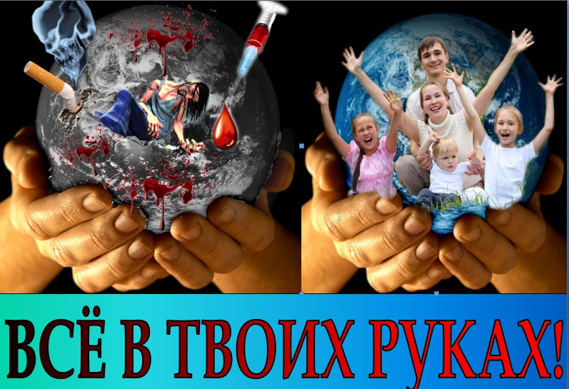

МБУ СШ № 2
| |||||||||
| Слабовидящим Обычный |
Новости 2019 (Перейти к новостям 2018 или 2017 года)
13-20 ноября 2019
13-16 ноября в городе Казань проходил традиционный Всероссийский турнир по легкой атлетике памяти Заслуженного тренера России Красильникова Юрия Михайловича среди СДЮСШОР, СШ, ДЮСШ. В соревнованиях приняло участие порядка 1200 человек из таких городов, как Москва, Казань, Самара, Оренбург, Пермь, Ижевск, Нижний Новгород, Кострома и Шарья. Борьба проходила на дистанциях гладкого бега: 60, 200, 400, 800, 1500 и 3000 метров; прыжках в высоту и с шестом, длину, тройным; барьерном беге на 60 метров, толкании ядра и эстафетном беге 4 по 100 метров.
Спортсмены спортивной школы № 2 города Кирова в составе 43 человек приняли участие и порадовали уверенными победами в данном мероприятии. Среди девушек 2002-2003 г.р Ямшанова Карина, выйдя в финал на дистанции 200 метров с результатом 23,30 секунды пришла к финишу второй, показав 23,18 секунды. Жигалов Алексей 2005 г.р в своей возрастной группе, показав в беге на 400 метров результат 52,39 секунды, не только поднялся на вторую ступень пьедестала, но и побил тем самым рекорд Кировской области. Среди юношей 2000-2001 г.р. Ишутинов Евгений, установил в беге на 400 метров отличный результат-50,92 секунды. В итоге бронзовая медаль соревнований.
В эстафетном беге 4 по 100 метров бронзовыми призёрами среди девушек 2004-2005 годов рождения стала команда в составе: Марьиной Анны, Гребцовой Екатерины, Петровой Надежды, Курочкиной Анастасии, их результат 52,13 секунды. Серебряными призёрами состязаний стал квартет девушек 2002-2003 года рождения – Николаева Виктория, Следникова Надежда, Медведева Мария, Ямшанова Карина, финишировавшие данную дистанцию за 51,55 секунды. Команда юниоров в результате упорной борьбы заняли второе место в этой же дисциплине, показав 47,97 секунды. В команду вошли: Саляхов Наиль, Дрягин Максим, Ишутинов Евгений, Валеев Ярослав.
Автор новостей - Следникова Е.Л.
16-23 октября 2019 года
В минувшее воскресенье в манеже с/к «Прометей» состоялось первенство спортивной школы № 2 города Кирова по лёгкой атлетике среди юношей и девушек 2007 года рождения и моложе.
Всего 163 юных легкоатлета решили испытать себя в легкоатлетическом троеборье. Ребятам предстояло пробежать дистанцию в 50 метров, прыгнуть в длину с места и заключительным видом был у 2007-2008 г.р бег на 300 метров, у более младшей возрастной группы бег на 200 метров.
Самыми сильными, быстрыми, выносливыми стали у девочек 2010 г.р – Рычкова Анастасия (50 метров - 8,2 секунды, длина – 190 сантиметров, 200 метров – 35,1 секунды), Чернятьева Анна 2009 года рождения (50 метров-8,2 секунды, длина - 179 сантиметров, 200 метров – 35,0 секунды), Плесовских Мария 2008 года рождения (50 метров – 7,6 секунды, длина – 225 сантиметров, 300 метров – 50,7 секунды), у девочек 2007 годов рождения Охапкина Анастасия (50 метров-7,2 секунды, длина-220 сантиметров, 300 метров – 48,5 секунды). У мальчиков 2010 года рождения не было равным Кузнецову Луке (50 метров-7,8 секунды, длина – 190 сантиметров, 200 метров – 33,3 секунды), Градовому Арсению 2009 года рождения ( 50 метров – 7,8 секунды, длина-185 сантиметров, 200 метров- 33,7 секунды), Кострикову Матвею 2008 года рождения ( 50 метров – 7,4 секунды, длина – 215 сантиметров, 300 метров – 49,9 секунды), Черных Ивану 2007 года рождения (50 метров-7,1 секунды, длина 252 сантиметра, 300 метров – 44,4 секунды).
По итогам финальных игр:1 место - команда из Белой Холуницы 2 место - команда Исток 3 место – команда МБУ СШ №2( первая команда) Поздравляем всех ребят, тренеров, многочисленных болельщиков - родителей!
19 октября в спортивном зале пгт Подосиновец состоялось первенство волейбольной лиги «Поюжье» среди мальчиков и девочек 2007 года рождения и младше. 3 команды юношей и девушек сыграли игры в один круг. В результате спортивной борьбы первое место заняла команда Подосиновец - девочки, второе волейболисты мальчики –хозяева турнира и третью строчку итоговой таблицы заняли юноши СШ №2 г.Кирова

Автор новостей - Следникова Е.Л.
20 октября 2019 года в манеже "ПРОМЕТЕЙ" состоится первенство СШ2 по легкой атлетике
20 октября 2019 года в 9-00 в манеже "ПРОМЕТЕЙ" состоится первенство СШ2 по легкой атлетике. Главный судья Елена Владимировна Жерносек , секретарь Рябова Эльвира Борисовна
09 октября - 16октября 2019 года
11-13 октября 2019 года состоится первенство Кировской области по волейболу среди девушек 2005-2006 года рождения. Мероприятие будет проводиться в спортивном зале МБУ СШ № 2 г.Кирова, Октябрьский проспект 31. Начало мероприятия в 11-00.
02 октября - 09октября 2019 года
С 23 сентября по 01 октября в Адлерском районе города Сочи прошли финальные Всероссийские соревнования по легкоатлетическому четырёхборью «Шиповка юных» среди юношей и девушек 2008-2009 г.г.р., 2006-2007 г.г.р., 2004-2005 г.г.р. Более 1000 спортсменов из 81 регионов России, Москвы, Санкт-Петербурга, Иркутска, Тулы, Волгограда, Йошкар-Олы, боролись за звания лучших.
Соревнования проходили по системе четырёхборья: бег на 60 метров. метание снаряда, прыжки в длину, бег на 500, 600 или 1000 метров – в зависимости от возрастной группы и эстафетного бега 4 по 100 метров.
Команда мальчиков СШ № 2 2004 - 2005 г.г.р. (Крюков Дмитрий, Бушмакин Даниил, Носов Илья, Жигалов Алексей) приняли участие в состязаниях среди 24 команд спортивных школ.
Команда девочек 2004-2005 г.р. в составе: Курочкина Анстасия, Пескишева Мария, Шилова Ирина, Петрова Анастасия соревновались среди 30 команд спортивных школ.
Автор новостей - Следникова Е.Л.
21 сентября 2019 года Всероссийские массовые соревнования «Кросс Нации» – самое массовое спортивное мероприятие на территории Российской Федерации. Основная цель массовых соревнований – повышение приверженности граждан к ведению здорового образа жизни, в т.ч. к регулярной физической активности.
Деятельность Центра медицинской профилактики http://prof.medkirov.ru/site/kross_national
11 сентября проводится Всероссийский День трезвости
Зависимость от алкоголя – актуальная проблема современного общества. Наше государство реализует целый комплекс мер с целью сокращения употребления алкоголя населением. Особенно эффективны запретительные меры в отношении молодежи и подростков. Запрет на приобретение спиртного детьми и подростками, ограничение времени продажи алкогольных напитков, запрет употребления алкоголя в общественных местах – все это помогает молодым людям не вовлечься в злоупотребление и зависимость.
Деятельность Центра медицинской профилактики http://prof.medkirov.ru/site/kross_national
26 июня - 3июля 2019 года
Областное соревнование по лёгкой атлетике Кубок КОФЛА
В минувшую субботу прошло традиционное Областное соревнование по лёгкой атлетике «Кубок КОФЛА». Данный старт является далеко не самым массовым в летнем соревновательном сезоне, участие в нём приняли порядка 120 человек. Соревнования включили в себя бег на дистанции 60, 300, 600 и 1000 метров, а также прыжки в длину с разбега и толкание ядра.
Лучшие результаты были показаны в коротком спринте Перминовой Викторией, финишировавшей второй в беге на 60 метров среди женщин, затратив на преодоление дистанции 8,2 секунды. Панкратов Александр был третьим среди мужчин – 7,1 секунды.
В забегах на 300 метров к финишу вторым пришёл Ишутинов Евгений – 36,7 секунды. Отрезок вдое длиннее первым завершил Валеев Ярослав – 1 минута 26,8 секунды. В прыжках в длину Чигрикова Ангелина лидировала с результатом 4 метра 62 сантиметра.
В толкании ядра Козлова Евгения толкнула снаряд на 10 метров 50 сантиметров и обеспечила тем самым золотую медаль.
Автор новостей - Следникова Е.Л.
19-26 июня 2019 года
22 июня прошли соревнования на призы Заслуженного мастера спорта по легкой атлетике, призера трех чемпионатов мира, двукратной чемпионки Европы, участницы Олимпийских игр в Сеуле (Южная Корея) и в Барселоне (Испания), Любови Михайловны Гуриной. Вклад, внесённый этим человеком в лёгкую атлетику нашей области сложно переоценить: это не только величайший спортсмен, прославивший вятскую школу бега на мировых соревнованиях, но и великолепный тренер, воспитавший не одно поколение спортсменов. Результаты, показанные ею на различных дистанциях, остаются недостижимыми для вятских спортсменок на протяжении уже нескольких десятилетий - Любовь Михайловна является рекордсменом области в беге на 400, 800, 1000 и 1500 метров, а также в составе команды в эстафетном беге 4 по 400 метров.
В областном соревновании на призы этого выдающегося человека приняли участие более 180 спортсменов, разделенных на четыре возрастные категории: младший, средний, старший возраст, а так же взрослые. Все они мерялись силами в трех беговых видах легкой атлетики – беге на 100, 400 и 800 метров. Спортсмены МБУ СШ № 2 участвовали в данном старте в количестве 45 человек.
Лучшие результаты соревнований показали следующие спортсмены: среди девочек младшего возраста Чигрикова Ангелина на стометровой дистанции была первой 13.4 секунды. На дистанции 400 метров Назарова Лидия финишировала первой, показав 1 минуту 10,6 секунды. У девушек среднего возраста Петрова Надежда 100 метровку закончила с вторым результатом 13,1 секунды. У девушек старшего возраста Следникова Надежда лидировала в беге на 100 метров – 13,2 секунды. У женщин лидировала Солодянникова Ангелина – 12, 9 секунды в финале короткого спринта. Среди мальчиков младшего возраста Конышев Никита отличился победой: выиграв 100 метров с результатом-13,5 секунды. В среднем возрасте Крюков Дмитрий занял третье место в спринте – 12,2 секунды, на 800 метровой дистанции победу принес Носков Никита - 2.05,8 секунды. Среди мужчин Валеев Ярослав с результатом 53,6 секунды на дистанции 400 метров выиграл серебряную награду.

Автор новостей - Следникова Е.Л.
12-19 июня 2019 года
13-15 июня на стадионе с/о «Динамо» г.Пермь состоялся четвёртый этап Кубка Т.Зеленцовой по лёгкой атлетике. Состязание собрало порядка 850 человек из 15 регионов России. Команда СШ №2 в количестве 5 человек составила достойную конкуренцию в борьбе за награды.
Жигалов Алексей в двоеборье 100 и 200 метров, проиграв победителю 4 очка, занял второе место (985 очков)
Носков Никита в многоборье 1000 и 1500 метров, набрав (816 очков), занял вторую ступень пьедестала.
15-16 июня на стадионе «ИСКО» прошли Традиционные открытые областные соревнования по легкой атлетике "Мемориал Заслуженного тренера СССР и России Нивина А.И. ". На этих соревнованиях приняли участие порядка 280 спортсменов Кировской области. Легкоатлеты боролись друг с другом на беговых дистанциях 100, 200, 400, 800, 1500 и 3000 метров. Спортсмены СШ №2 с успехом выступили в данном старте.
Среди девушек младшего возраста Чигрикова Ангелина на дистанции 100 метров заняла второе место – 13,2 секунды. Отгон Виктор с таким же результатом пришел к финишу вторым на аналогичном отрезке.
В среднем возрасте у девушек Петрова Анастасия отметилась дублем третьих мест, финишировав в беге на 200 метров за 27,2 секунды, а на дистанции вдвое длиннее за 1 минуту 04,9 секунды. Юкляевская Ольга, пробежав 800 метров за 2 минуты 59, 0 секунды пришла к финишу третьей. У юношей в коротком спринте Носков Клим отличился двумя призовыми местами, финишировав за 11,9 секунды на стометровке, и за 25,1 секунды на отрезке в два раза больше. Крюков Дмитрий завоевал серебро на двухсотметровке – 24,7 секунды и на 400 метров – 57,9 секунды.
У девушек старшего возраста сильнейшей на спринтерской дистанции стала Медведева Мария, завершившая за 13,1 секунду – 100 метровый отрезок. На дистанции 200 метров равной не было Ямшановой Карине – 25,7 секунды. Так же на 400 метрах спортсменке никто не смог составить конкуренции – 1 минута.02,0 секунды. Носков Никита выиграл 800 метров- 2 минуты 09,5 секунды.
Среди женщин Солодянникова Ангелина отметилась дублем призовых мест, 100 метров – 12,9 секунды, 200 метров – 26,8 секунды: второе и третье место соответственно. Ишутинов Евгений, с результатом 51,8 секунды выиграл дистанцию в круг

Автор новостей - Следникова Е.Л.
26 июня отмечается Всемирный день борьбы с наркоманией и незаконным оборотом наркотиков.
С каждым днём последствия наркотической зависимости в мире становятся всё более угрожающими: наркотики овладевают детьми и подростками,
увеличивается количество молодых людей, употребляющих психоактивные вещества.
Важную информацию по профилактике, о негативных последствиях употребления психоактивных веществ и преимуществах трезвого
образа жизни вы можете прочесть на сайте:
denborba_narkomania

06-09 июня 2019 года
В городе Саранск на современно оснащенном стадионе «Старт» в период с 06 по 09 июня прошел Чемпионат и первенство Приволжского федерального округа (молодежь 23 лет, юниоры и юниорки до 20 лет, юноши и девушки до 18 лет) по легкой атлетике. В данном состязании приняли участие более 500 спортсменов из 13 регионов нашего федерального округа.
Легкоатлеты МБУ СШ № 2 г.Кирова в составе сборной команды Кировской области достойно приняли участие в данном старте. Козловой Евгении в толкании ядра не хватило нескольких сантиметров до наградного пьедестала, в итоговых попытках спортсменка отправила снаряд на 11 метров19 сантиметров, заняла четвёртое место. Злобна Ульяна, метнув копьё на 36 метров 38 сантиметров заняла пятую позицию в итоговых протоколах. В беге на 100 метров с барьерами Мокрецова Кристина в финальном забеге показала шестой результат – 15,41 секунды. На дистанции в круг Ямшанова Карина в финальном забеге заняла шестое место (1 минута 01,32 секунды). Самойлова Дарья так же на шестой строчке протокола в прыжках в высоту – 1 метр 60 сантиметров.
Автор новостей - Следникова Е.Л.
Друзья, 16 июня в Кирове пройдут необычные Олимпийские игры! Мероприятие состоится в спортивно-туристическом комплексе «Порошино».
В течение всего дня с 11 часов на свежем воздухе будут работать несколько площадок, посвящённых олимпийским видам спорта и не только. С ними гостей познакомят представители спортивных федераций и школ, а также сказочные герои из разных регионов России. Они будут вести анимационную программу и организовывать спортивные «сказочные» состязания.
Приходите с детьми! Будет весело и интересно!

29 мая - 05 июня 2019 года
01-02 июня на стадионе «ИСКО» прошли традиционные областные соревнования по легкой атлетике «Мемориал ЗМС Григория Дегтярева». На этих состязаниях приняли участие порядка 160 молодых спортсменов Вятского края, разделенные на три возрастные группы: 2004-2005, 2006-2007 и 2008-2009 годы рождения. Соревнования представляли собой четырехборье: бег на 60 метров, метание снаряда, прыжки в длину с разбега, бег на длинную дистанцию (в зависимости от возрастной группы, от 500 до 1000 метров). 62 спортсмена СШ № 2 успешно состязались в упорной борьбе. Награждение проводилось за шесть призовых мест.
В самой юной возрастной группе четвёртое место у девочек заняла Плесовских Мария, показав следующие результаты: ( 60 метров – 9,1 секунды, прыжки в длину – 4 метра ровно, метание снаряда - 17 метров 61 сантиметров, 500 метров - 1 минуту 38,1 секунды); набрав в итоге 214 очков. Фокин Никита поддержал Марию, заняв четвёртое место с результатами: ( 60 метров – 8,7 секунды, прыжки в длину – 4 метра 28 сантиметров, метание снаряда – 31 метр 70 сантиметров, 600 метров – 2 минуты 06,2 секунды), набрав 149 очков.
Среди 2006-2007 годов рождения у девочек второе место заняла Чигрикова Ангелина: (60 метров - 8,1 секунды, метание снаряда - 47 метров 96 сантиметров, прыжок в длину - 4 метра 82 сантиметра, 600 метров – 1 минута 55, 6 секунды, в итоге - 366 очков). Среди юношей первым стал Отгон Виктор: (60 метров - 8,0 секунды, метание снаряда 53 метра 70 сантиметров, прыжок в длину- 4 метра 78 сантиметров, 800 метров- 2 минуты 35,8 секунды, 256 очков).
В самом старшем возрасте, принимавшем участие в соревнованиях, Курочкина Анастасия среди девочек этого возраста заняла третью ступень пьедестала и бронзовую награду, показав: (60 метров – 8,1 секунды, длина – 4 метра 44 сантиметра, метание снаряда – 45 метров 40 сантиметров, 600 метров – 1 минута 47, 5 секунды с итогом в 366 очков). Носков Никита и Жигалов Алексей выиграли у соперников с результатами: (337 очков, 60 метров - 7,5 секунды, прыжки в длину - 5 метров 28 сантиметров, метание ракеты – 52 метра 95 сантиметров, 1000 метров - 2 минуты 46,3 секунды и 296 очков, 60 метров – 7,5 секунды, снаряд – 48 метров 94 сантиметра, длина – 5 метров 32 сантиметра, 1000 метров – 3 минуты 11,8 секунды ), заняв второе и третье место соответственно.
Автор новостей - Следникова Е.Л.
17-22 мая 2019 года
В минувшую пятницу и субботу, 17-18 мая, на стадионе с/к «Прометей» прошли открытые соревнования по лёгкой атлетике среди юношей и девушек среднего и старшего возраста, на котором приняло участие порядка 300 спортсменов. Холодная погода, ветер и град помешали показать наивысшие личные результаты, но не смотря на это более 70 учащихся МБУ СШ №2 составили достойную конкуренцию соперникам.
В средней возрастной группе 100-метровку с барьерами с результатом 17,9 секунды завершила Петрова Надежда первой. Также она может похвастаться победой на дистанции 300 метров с барьерами –51,4 секунды. Курочкина Анастасия первенствовала в беге на 400 метров, её результат 1 минута 03,4 секунды. У юношей в беге на 100 метров победу праздновал Носков Клим - 12,1 секунды. Носков Никита лидировал в беге на 1500 и 3000 метров, результаты 4 минуты 25,0 секунды, 10 минуты 00,6 секунды соответственно. В эстафетном беге 4 по 100 метров первым к финишу пришла четверка СШ №2 в составе: Гребцова Екатерина, Попова Олеся, Петрова Надежда, Курочкина Анастасия, затратившая на дистанцию 53,4 секунды. Успех поддержали и команда юношей, в составе: Носков Клим, Крюков Дмитрий, Носов Илья, Жигалов Алексей-1 место (48,4 секунды).
В старшем возрасте Следникова Надежда первой пришла к финишу 100 метров с барьерами за 18,5 секунды. Мошкин Лев выиграл 110 метров с барьерами. 400-метровый круг первой завершила Медведева Мария -1 минута 01,0 секунды. Корчёмкин Демид был первым на дистанции 400 метров –53,5 секунды. В толкании ядра отличилась Козлова Евгения, её результат 11 метров 78 сантиметров остался недосягаем для соперников. В эстафетном беге команда в составе: Черных Александр, Кондратьев Глеб, Корчемкин Демид, Дрягин Максим закончила с результатом 46,5 секунды.

Автор новостей - Следникова Е.Л.
08-15 мая 2019 года
13 мая на базе СШ № 2 проводился турнир по волейболу среди мальчиков 2007-2008 г.р., посвящённый Дню Победы. Участвовали команды из Кирова, Кирово-Чепецка, Белой-Холуницы. Игры проводились по круговой системе из пяти партий. Первую строчку в итоговой таблице заняла команда из Кирово-Чепецка, на второй позиции СШ №2 г.Кирова, замыкает тройку лидеров команда Белой Холуницы. Легкоатлеты готовятся к старту 17-18 мая, где будет сформирована сборная команда Кировской области для участия в ПФО в г. Саранске.
01-08 мая 2019 года
В минувшие субботу и воскресенье на стадионе Прометей проходила XXIX Спартакиада учащихся Кировской области по легкой атлетике. Порядка 300 спортсменов из 20 районов области боролись за победу в традиционных видах спортивной программы, приближая своими результатами свою сборную к победе в командном зачете, в том числе и 67 спортсменов СШ №2. В субботу накал на беговой дорожке был очень высок: около 40 юношей и столько же девушек боролись за звание лучших на дистанции 100 метров, впоследствии переведя эту борьбу в командное русло – эстафету 4 по 100 метров. Выступить на этих соревнованиях не преминули спортсмены более молодых возрастных групп, нежели установлено в положении соревнований. Эти легкоатлеты приняли участие вне конкурса, показав своими высокими результатами готовность бороться и побеждать своих сверстников в этом спортивном сезоне.
Самые высокие результаты традиционно были показаны в спринте. Дистанцию 200 и 400 метров выиграла Медведева Мария, закончив их за 27,2 секунды и 1 минуту 01,5 секунды соответственно. В барьерном беге на 100 метров первенствовала Следникова Надежда, пробежавшая этот отрезок за 16,8 секунды, 110 и 400 метров с барьерами первым завершил Мошкин Лев, финишировавший за 16,6 секунды и 1 минуту 05,6 секунды соответственно. Козлова Евгения в толкании ядра заняла лидирующую позицию в итоговом протоколе (11 метров 40сантиметра). На дистанции в два круга результат 2 минуты 08,0 секунды принес Корчемкину Демиду золотую награду. Команда девушек и юношей в эстафете 4 x100 метров отличились дублем серебряных наград, пробежав за 53,1 секунды и 47,9 секунды.
С 1-3 мая в г. Козьмодемьянске проходил всероссийский турнир по волейболу среди девушек 2007-2008 г.р. В состязании приняли участие 7 команд, играли по круговой системе. В финальных играх, уступив командам из Новочебоксарска и Козьмодемьянска, команда СШ №2 г. Кирова заняла третье место.

{kind=link}
{kind=link}
{kind=link}
{kind=link}
{kind=link}
{kind=link}
{kind=link}
{kind=link}
{kind=link}
{kind=link}
{kind=link}
{kind=link}
{kind=link}
{kind=link}
{kind=link}
{kind=link}
{kind=link}
{kind=link}
{kind=link}
{kind=link}
{kind=link}
{kind=link}
{kind=link}
{kind=link}
{kind=link}
{kind=link}
{kind=link}
{kind=link}
{kind=link}
{kind=link}
{kind=link}
{kind=link}
Автор новостей - Следникова Е.Л.
24 апреля-1 мая 2019 года
В пятницу и субботу в манеже «Прометей» проходило Открытое Первенство города по легкой атлетике среди юношей и девушек, которое собрало более 160 спортсменов из Кирова и районов области. Данный старт открывает летний соревновательный сезон, а в программу мероприятия вошли не классические виды лёгкой атлетики. К сожалению, ветреная погода не позволила показать высокий уровень подготовки легкоатлетов. Порядка 60 юношей и девушек СШ №2 составили достойную конкуренцию во всех видах состязаний.
У девушек победами отличились: в коротких барьерах Петрова Надежда - 17,5 секунды, на дистанции 300 метров с барьерами Курочкина Анастасия - 49,8 секунды, в толкании ядра Козлова Евгения с победным результатом - 11 метров 43 сантиметра вышла в лидеры. Медведева Мария финишировала второй на дистанции 300 метров - 43,5 секунды, Гребцова Екатерина и Марьина Анна в прыжках в длину заняли вторую и третью ступень пьедестала, показав 4 метра 63 сантиметра и 4 метра 47 сантиметров соответственно.
У юношей победителем на дистанции 1000 метров стал Носков Никита - 2 минуты 48,4 секунды, в толкании ядра не было равных Емельянову Ивану, снаряд опустился на отметке 9 метров 95 сантиметров. На длинных барьерах Мошкин Лев занял второе место-48,7 секунды, Жигалов Алексей, пробежав стометровку за 11,8 секунды показал третий результат, на дистанции в трое длиннее спортсмен занял второе место - 38,0 секунды. Дублем призовых мест отметился Корчёмкин Демид: третье место на 600 метрах-1 минута 38,0 секунды, второе место на отрезке в 1000 метров - 2 минуты 49,8 секунды. Третью ступень пьедестала занял Фоминых Александр, показав результат в прыжках в длину - 5 метров 30 сантиметров.
{kind=link}
{kind=link}
Автор новостей - Следникова Е.Л.
17-24 апреля 2019 года
Команда девушек МБУ СШ №2 г.Кирова 2005-2006 г.р. принимала участие в всероссийском турнире по волейболу. Игры проходили 18-21 апреля в городе Ижевске. Шесть команд из Нижнекамска, Ижевска, Воткинска, Кирова разыгрывали призовые места из пяти партий по круговой системе. Команда СШ №2 заняла 5 место.
Легкоатлеты готовятся к открытию летнего сезона, 26-27 апреля на стадионе «Прометей» состоится открытое первенство города Кирова среди юношей и девушек 2002 г.р. и моложе.
{kind=link}
{kind=link}
Автор новостей - Следникова Е.Л.
03-10 апреля 2019 года
05-07 апреля в пгт Верхошижемье прошло первенство Кировской области по волейболу среди девушек 2003-2004 годов рождения.
В соревнованиях приняли участие более 60 представительниц прекрасного пола из команд Кирова, Белой Холуницы, Подосиновца, Средне -Ивкино.
Турнир проходил по круговой системе из пяти партий. В результате напряжённых поединков спортсменки СШ №2 города Кирова заняли второе место, уступив команде из Белой Холуницы, спортсменки из СШ пгт Подосиновца привезли домой третье место и бронзовую награду.
В минувшие выходные в спортивном комплексе «Прометей» выявляли сильнейших лёгкоатлеты. Юные спортсмены 2008 и 2009 годов рождения и моложе принимали участие в первенстве МБУ СШ № 2 города Кирова. Порядка 80 мальчишек и девчонок соревновались за звание чемпиона. Состязание проходили по системе троеборья (бег на 50 и 200 метров, прыжок в длину с разбега).
Среди девочек 2008 г.р победительницей стала Бастракова Валерия (50 м-7,8секунды, длина 4 метра 08 сантиметра, 200 м-31,1 секунды) – тренер Рябова Э.Б., Летягина Ника среди девочек 2009 г.р. выиграла троеборье (50 м-8,6 секунды, длина 3метра 40 сантиметров, 200 м-36,03 секунды) – тренеры Следниковы Е.В., Следникова Е.Л. У мальчиков 2008 г.р равным не было Кострикову Матвею (50 м-7,4 секунды, длина 4 метра 05 сантиметра, 200 м-31,01 секунды). Поротиков Фёдор оказался сильнейшим у мальчиков 2009 г.р (50 м-7,9 секунды, длина-3 метра 25 сантиметров, 200 м-33,09 секунды), обоих спортсменов тренирует Жерносек Е.В.
Призёры и победители были награждены медалями, грамотами и сладкими призами. Поздравляем спортсменов и их наставников!
{kind=link}
{kind=link}
{kind=link}
{kind=link}
{kind=link}
Автор новостей - Следникова Е.Л.
20-22 марта 2019 года
20-22 марта в городе Казани прошёл финал «Шиповки юных» среди девочек и мальчиков 2008-2009 г.р.
Команда девочек отстала от третьего места всего на 7 очков, чему равняется примерно 0,2 секунды в спринте. В итоге высокое 4 место из 20 команд разных регионов России.
Команда мальчишек поддержала девочек и заняла 4 место из 17 команд. Многие побили личные рекорды и приобрели бесценный опыт спортивной борьбы.
{kind=link}
{kind=link}
{kind=link}
{kind=link}
28 марта на Всероссийском финале «Шиповки юных» команда юношей 2004-2005 г.р заняла 4 место, показав отличный технический уровень в эстафете 4 по 100 метров!
{kind=link}
28-30 марта в городе Новочебоксарске пройдет Всероссийский турнир по волейболу среди девушек 2003-2004 г.р. и 2007-2008г.р. В соревнованиях примут участие две команды спортсменок от МБУ СШ № 2
{kind=link}
{kind=link}
Автор фотографий -Глушков Ю.А., Следникова Е.Л.
20-27 февраля 2019 года
23-24 февраля завершился последний старт зимнего соревновательного сезона 2019 года в нашей области, Фестиваль Кировской области по бегу. Порядка 230 спортсменов города Кирова и районов области, а также гости из Коряжмы и Глазова боролись за победу в 6 беговых дисциплинах: 60, 200, 300, 600, 1000 и 2000 метров. В данном старте легкоатлеты были разделены на 3 возрастные категории: средний и старший возраст, а также взрослые спортсмены.
Из 40 спортсменов СШ №2 двумя успешными стартами в этих состязаниях смогли отметиться следующие спортсмены: Токарева Юлия заняла второе и третье место в возрастной группе девушек среднего возраста на дистанциях 300 метров (46,21секунда) и 200 метров (28,75 секунды) соответственно. Жигалов Алексей на дистанции 300 метров лидировал – 39,85 секунды, а в беге на 60 метров смог завоевать бронзу – 7,75 секунды.
В старшем возрасте не было равных Медведевой Марии в беге на 300 метров (43,26 секунды) , на дистанции 60 и 200 метров спортсменка завоевала серебро (8,29 секунды и 27,08 секунды). Дрягин Максим в коротком спринте поднялся на первую ступень пьедестала - 7,47 секунды, в беге на 200 метров, с результатом 24,80 секунды – покорилась лишь третья.
{kind=link}
{kind=link}
{kind=link}
Автор фотографий - Яровиков М.Н., автор текста - Следникова Е.Л.
23-30 января 2019 года
26-27 января в легкоатлетическом манеже «Вересники» проходил I этап 19 Всероссийских соревнований по лёгкой атлетике на призы Заслуженного мастера спорта Татьяны Зеленцовой. В Кирове соревнования состоялись впервые. В историю манежа вписали выступления порядка 600 спортсменов 2002 г.р. и моложе. Данный старт собрал множество спортсменов из 12 регионов страны, разделенных на 4 возрастные группы: 2002-2003 г.р., 2004-2005 г.р., 2006-2007г.р., 2008 г.р. и моложе. Результаты выступления спортсменов подводились по сумме набранных очков двоеборья. Всего было предложено 6 видов многоборий для участников: 60 метров с барьерами + 150 метров с барьерами у 2008 г.р и моложе, 60 метров с барьерами + 200 метров с барьерами, 60 метров + 200 метров, 60 метров+150 метров для 2008 г.р. и моложе, 300 метров + 600 метров, 600 метров + 1000 метров, смешанная эстафета 4 по 200 метров. Более 100 спортсменов СШ успешно боролись за призы соревнований.
Самым успешным выступлением было у Носкова Никиты 600 метров он пробежала за 1 минуту 30,08 секунды, 1000 метров - за 2 минуты 51,34,0 секунды, набрав в сумме этих двух видов 765 очков и став победителем соревнований.
Чуть менее успешным было выступление Чигриковой Ангелины, занявшая бронзу в многоборье 60 + 200 метров. Указанные дистанции Ангелина преодолела за 8,56 секунды и 28,47 секунды соответственно, набрав в сумме 653 очка.
В многоборье 300 + 600 метров тройку сильнейших спортсменок замкнула Медведева Мария, набравшая 936 очка. На обозначенных отрезках Мария показала 43,88 секунды и 1 минута 44,41 секунда соответственно.
Команда девушек в составе Бастракова Валерия, Чигрикова Ангелина, Курочкина Анастасия, Медведева Мария выиграли золото среди 12 команд.
Команда юношей в составе Костриков Матвей, Отгон Виктор, Носков Клим, Дрягин Максим заняли третью ступень пьедестала среди 11 команд.
Спортсменов награждали почётные гости соревнований Т.П.Зеленцова, губернатор Кировской области Игорь Владимирович Васильев, министр спорта и молодёжной политики Анна Александровна Альминова.
Областной турнир среди юношей 2004-2005 г.р. по волейболу состоялся 26 января в с/комплексе п.г.т. Верхошижемье.
В турнире участвовали команды из Верхошижемья, Уржума, Белой Холуницы, Бурмакино, Кирова. Спортсмены были разбиты по двум подгруппам по три команды. В каждой подгруппе играли до двух побед. Команды занявшие первое место играли за 1-2, команды, занявшие второе место боролись за 3-4 места.
В итоговой таблице турнира спортсмены СШ №2 г.Кирова расположились на первой строчке, команда СШ Верхошижемья на второй, команда СШ Уржума на третьей.
{kind=link}
{kind=link}
Автор фотографий - Яровиков М.Н., автор текста - Следникова Е.Л.
16-23 января 2019 года
Чемпионат Кировской области по легкой атлетике в помещении
Порядка 180 спортсменов боролись за звание лучших в 11 легкоатлетических дисциплинах: беге на 60, 100, 400, 800, 1500, 3000 метров, 2000 метров с препятствиями, беге на 60 метров с барьерами, прыжках в длину и высоту, толкании ядра. 54 легкоатлета МБУ СШ № 2 успешно боролись за звания чемпионов. выходные прошло одно из самых красочных и ярких спортивных событий года, Областные соревнования по лёгкой атлетике на призы Заслуженного мастера спорта Ольги Витальевны Курагиной. Напомним, что Ольга Витальевна добилась наивысшего достижения на Олимпийских играх 1980 года в Москве, завоевав бронзовую награду в пятиборье, показав достойные результаты: 1,84 метра в прыжках в высоту, 2 минуты 03,6 секунды в беге на 800 метров, 6,77 метра в прыжках в длину, 13,26 секунды в беге на 100 метров с барьерами и 12,49 метра в толкании ядра.
54 легкоатлета МБУ СШ № 2 успешно боролись за звания чемпионов.
Лидером на дистанции 60 метров с барьерами стала Мокрецова Кристина, финишировав за 9,37 секунды. В финальном забеге на дистанции 200 метров первой прибежала Ямшанова Карина, с личным рекордом - 26,01 секунды. Злобина Ульяна в пряжках в высоту, преодолев планку на высоте 1 метр 60 сантиметров, заняла первую ступень наградного пьедестала.
Ишутинов Евгений отметился дублем призовых мест: на дистанции 200 метров, с результатом 23,48 секунды - занял третье место, а на отрезке в двое длиннее – выиграл золото, пробежав дистанцию за 51,3 секунды. Вторым закончил 800 метров Валеев Ярослав – 1 минута 58,98 секунды.
. Стоит отметить: все спортсмены показали уровень результатов первого взрослого разряда, Ямшанова Карина отличилась выполнением звания кандидата в мастера спорта.
Награждение проводили министр спорта и молодёжной политики Кировской области Альминова Анна Александровна и президент КОФЛА Следников Евгений Владимирович
{kind=link}
{kind=link}
{kind=link}
Автор фотографий - Яровиков М.Н., автор текста - Следникова Е.Л.